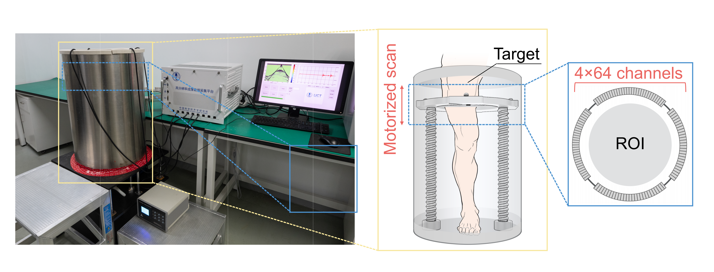

Welcome to OpenWaves
We present OpenWaves, a large-scale wave equation dataset designed to bridge the gap between theoretical equations and practical imaging applications. OpenWaves provides over 16 million frequency-domain wave simulations using real USCT (Ultrasound-CT) configurations, featuring anatomically realistic human phantoms across breast, limb, and arm organs.
Breast Dataset
- Scale: 8,000 anatomically realistic phantoms
- Density Types:
- Heterogeneous (HET)
- Fibroglandular (FIB)
- All Fatty (FAT)
- Extremely Dense (EXD)
- Applications: Breast cancer screening, tissue characterization

Limb Dataset
- Scale: 7,000 high-fidelity phantoms
- Key Features:
- Three-layer tissue modeling
- Strong scattering characteristics
- Enhanced CBS iterations
- Applications: Orthopedic imaging, trauma analysis

Arm Dataset
- Scale: 7,000 detailed phantoms
- Key Features:
- Smaller bone cavities
- Mixed training compatibility
- Diverse transducers
- Applications: Vascular imaging, scatter analysis

